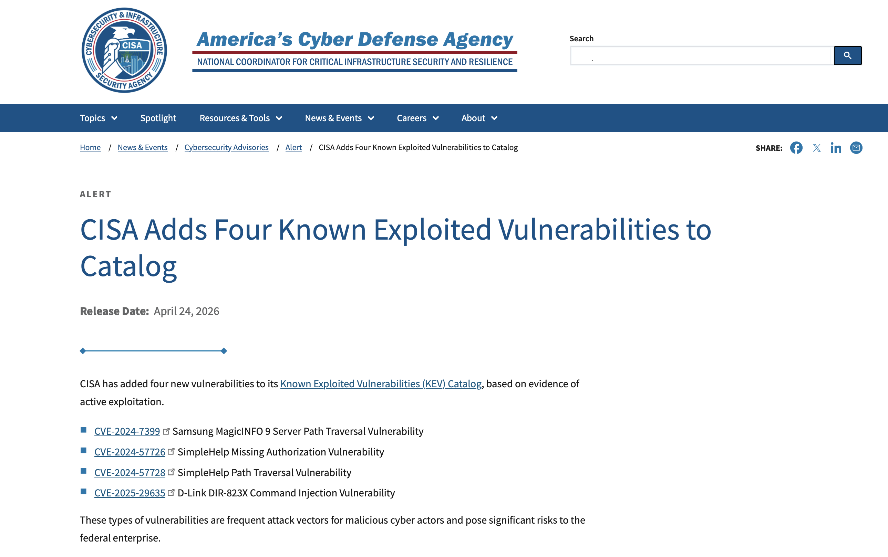

CISA's April 2026 KEV Additions
CISA added four vulnerabilities to the Known Exploited Vulnerabilities catalog in late April 2026: two in SimpleHelp, one in Samsung MagicINFO 9 Server, and one in D-Link DIR-823X routers. Here's what actually matters.

TL;DR: CISA added SimpleHelp (CVE-2024-57726, CVE-2024-57728), Samsung MagicINFO (CVE-2024-7399), and D-Link DIR-823X (CVE-2025-29635) to KEV. The SimpleHelp bugs form a server-takeover chain already exploited in ransomware campaigns. The Samsung patch was incomplete. The D-Link is end-of-life with no fix. Treat KEV as evidence of live exploitation, not a patch checklist.
What CISA Actually Added
On April 24, 2026, CISA added four vulnerabilities to the KEV (Known Exploited Vulnerabilities) catalog:
- CVE-2024-57726 and CVE-2024-57728 in SimpleHelp — an MSP-focused remote support platform
- CVE-2024-7399 in Samsung MagicINFO 9 Server — a digital signage management platform
- CVE-2025-29635 in D-Link DIR-823X routers — an end-of-life home router
The federal remediation due date is May 8, 2026. That matters if you're a federal agency. For everyone else, the date is a signal: this is urgent.
The NVD (National Vulnerability Database) records show CVE-2024-7399 at severity 9.8 and CVE-2025-29635 at 7.2. Those numbers are almost beside the point. CISA's KEV process is explicitly evidence-driven — entries mean someone is already exploiting these in the wild.
SimpleHelp and the MSP Blast Radius
SimpleHelp is remote support software used by managed service providers (MSPs) to access customer machines. The two CVEs form a practical takeover chain:
- CVE-2024-57726 lets a low-privilege technician create over-permissioned API keys and escalate to server administrator
- CVE-2024-57728 lets an admin upload a crafted zip and write files anywhere on the server filesystem
Horizon3.ai disclosed these to SimpleHelp in January 2025. Patches dropped within days. By January 22, Arctic Wolf was already seeing unauthorized access through SimpleHelp. The American Hospital Association reported ransomware attacks potentially linked to these flaws by January 29. By June 2025, CISA warned that ransomware actors were leveraging them in double-extortion operations.
Microsoft later tied these CVEs to Storm-1175 in Medusa ransomware operations. Sophos documented a DragonForce case where an MSP's SimpleHelp instance deployed ransomware across customer endpoints.
The platform's reach is the real problem. One SimpleHelp server compromise can yield intrusions across every organization that server manages. For ransomware actors, that's exactly the supply-chain leverage they want.
Samsung MagicINFO and the Patch Problem
CVE-2024-7399 is a path traversal flaw in Samsung MagicINFO 9 Server versions before 21.1050. The /MagicInfo/servlet/SWUpdateFileUploader endpoint didn't require authentication, let attackers control the save path, and didn't restrict dangerous file types. Unauthenticated upload of a JSP web shell gave SYSTEM-level code execution on default Windows deployments.
Samsung patched in August 2024. That should have been the end of it. It wasn't.
Huntress reported in May 2025 that version 21.1050.0 was still exploitable with the public PoC. Arctic Wolf later tied the complete fix to CVE-2025-4632 and version 21.1052. The first patch either was incomplete or covered a separate but extremely similar flaw.
Exploitation was rapid. SSD published its advisory on April 30, 2025. Within days, SANS reported Mirai-style attempts uploading a JSP shell and pulling down a multi-architecture bot payload. Rapid7 published a Metasploit module in May 2025.
The takeaway: any statement that "21.1050 fixed MagicINFO" is now outdated and operationally unsafe.
D-Link DIR-823X and the End-of-Life Trap
CVE-2025-29635 is a command injection flaw in D-Link DIR-823X firmware versions 240126 and 240802, reachable through POST requests to /goform/set_prohibiting. D-Link's September 2025 lifecycle notice says the DIR-823X reached end-of-life in November 2024. There is no supported fix. No firmware development. No customer support.
Akamai SIRT first saw active exploitation in early March 2026. The attacks fetched a Mirai variant called tuxnokill from 88.214.20[.]14, contacted C2 at 64.89.161[.]130:44300, and exposed a standard DDoS menu including TCP SYN, ACK, STOMP, multiple UDP methods, and HTTP NULL.
The same actor was targeting CVE-2023-1389 on TP-Link Archer AX21 and an RCE bug in ZTE ZXV10 H108L routers. This is purposeful multi-architecture botnet building.
There's no remediation path. Only replacement.
What This Batch Says About the Threat Environment
Three things stand out:
- Management planes are premium targets. SimpleHelp sits directly on remote administration paths into customer systems. MagicINFO is the control plane for distributed signage infrastructure. Both give attackers trusted paths into downstream systems.
- Unsupported edge hardware remains profitable. The DIR-823X is end-of-life, but the vulnerability is publicly known, the device is still widely deployed, and botnet operators are actively exploiting it. Old hardware is a low-cost, high-yield source of botnet capacity.
- KEV is evidence, not a checklist. When a CVE appears in KEV, the working assumption should shift from "someone could exploit this" to "someone already is."
Immediate Defensive Priorities
SimpleHelp
Move immediately to fixed versions — 5.5.8, 5.4.10, or 5.3.9. Then treat the server as potentially compromised:
- Change the administrator password
- Rotate technician passwords
- Create new API tokens
- Restrict technician, administrator, and API source IPs
- Review for unexpected API tokens or technician logins
- Check managed endpoints for modified
serviceconfig.xmlfiles pointing to unauthorized servers
Samsung MagicINFO
Patch to version 21.1052 specifically. Do not assume 21.1050 is sufficient. Review for requests to SWUpdateFileUploader, unexpected .jsp files, web shell artifacts, and exposure on TCP 7001 or 7002.
D-Link DIR-823X
Replace the device. If replacement cannot happen immediately, remove internet exposure, segment tightly, and monitor for requests to /goform/set_prohibiting or outbound connections to 88.214.20[.]14 and 64.89.161[.]130.
The lesson across all three: confirmed exploitation converts nominally patched or partially understood issues into immediate operational problems. When CISA adds a CVE to KEV, it's the floor, not the ceiling.